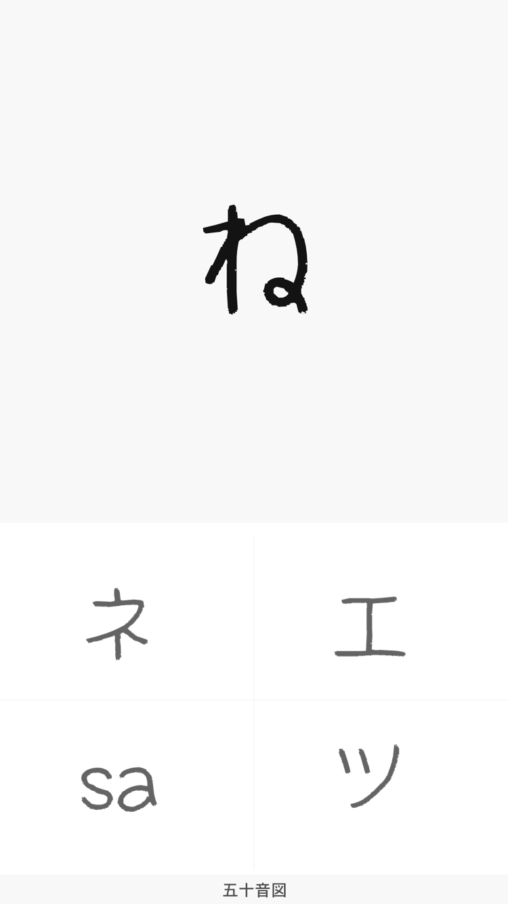
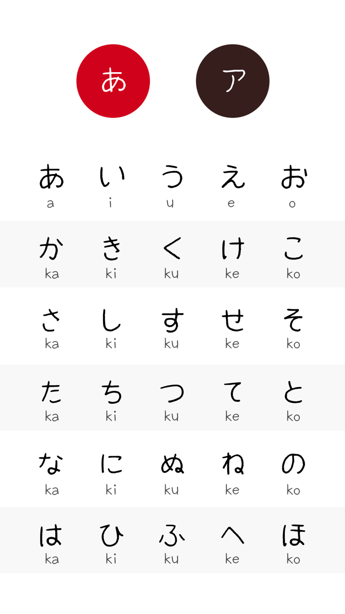

Three scripts, every direction.
Hiragana to katakana, katakana to romaji, romaji to hiragana. The question and the four choices are mixed differently every time.
Hiragana · Katakana · Romaji
The simplest kana trainer. Hiragana, katakana and romaji come up at random; pick the right one of four within five seconds. Repeat until your fingers answer before you think.
FreeiPhone & iPad8 languages

Hiragana to katakana, katakana to romaji, romaji to hiragana. The question and the four choices are mixed differently every time.
Each question has a five-second limit. Your correct-answer streak and average response time show how fast your reflexes really are.
A gojūon chart with the basic, voiced and combined kana. Switch between hiragana and katakana with a tap.
How it works
A correct answer moves straight on to the next question. Only when you miss does the correct kana appear, so you check it and keep going.

Free to download. No account: your practice history stays on your device.